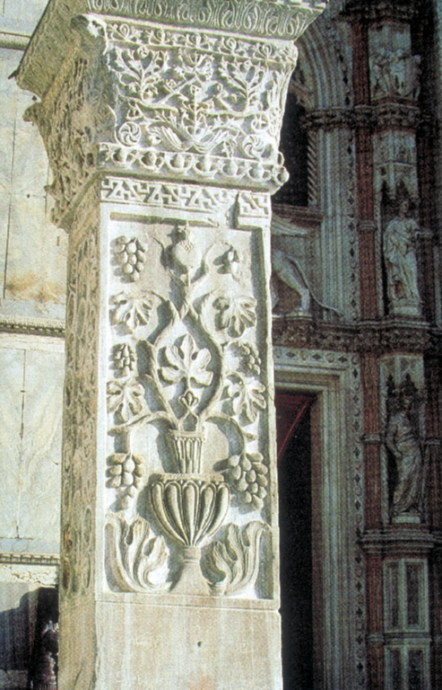

Debate 4: The Fourth Crusade
Proposition: The Fourth Crusade's capture of Constantinople was justified
Remember: you will be called upon to
answer at
least one of the items listed below as part of the debate; you may
(should)
also take part in the counterargument section if you have things to say
that
differ from what your teammates have said.
Debate:
Team 1: argue for the Proposition
Team 2: argue against the Proposition
Assigned questions - Team 1:
1. Background - Describe the Angeloi as a family and as rulers of Byzantium.
2. Background - Describe the life and career of Enrico Dandolo.
3. Background - Who is Geoffrey de Villehardouin and what were his connections to the Fourth Crusade?
4. Presentation of the proposition: what is the topic? what is the basis of your argument?
5. Arguments - select one significant argument, and explain what it means
6. Arguments - select one significant argument, and explain what it means
7. Arguments - select one significant argument, and explain what it means
8. Do the summary, summarizing your team's arguments and state why they are preferable (you can't do this ahead of time).
Assigned questions - Team 2:
1. Background - Describe the career of Pope Innocent III and his role in the Fourth Crusade.
2. Background - What was the siege of Zara and why did it matter?
3. Background - How did the Crusaders break into Constantinople?
4. Presentation of the proposition: what is the topic? what is the basis of your argument?
5. Arguments - select one significant argument, and explain what it means
6. Arguments - select one significant argument, and explain what it means
7. Arguments - select one significant argument, and explain what it means
8. Do the summary, summarizing your team's arguments and state why they are preferable (you can't do this ahead of time).
Primary source evidence
Geoffrey Villehardouin's Chronicle of the Fourth Crusade can be found here.
A more comprehensive collection of sources about the Fourth Crusade can be found here.
A Byzantine account of the Sack of Constantinople can be found here.
The pope's reprimand can be found here.
Links to information on this topic
A detailed summary of the events of the Fourth Crusade can be found here.
You should, of course, also consult your textbook, esp. pp. 318-329.